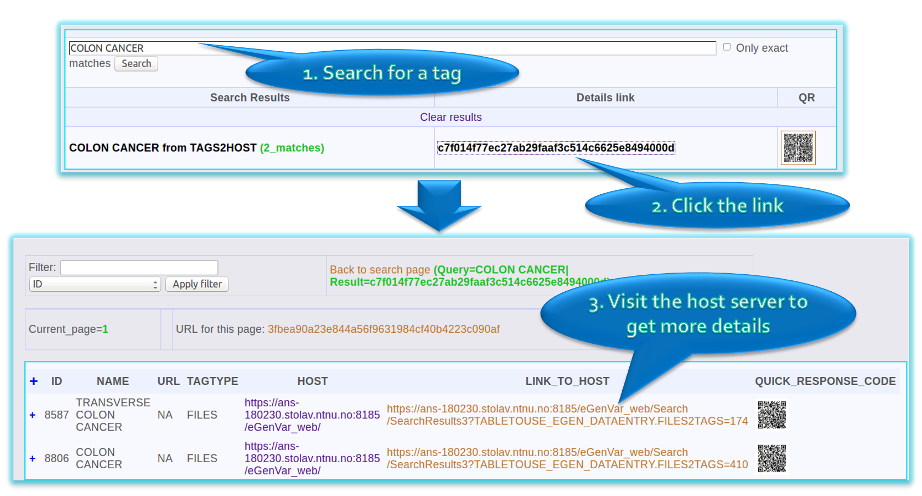
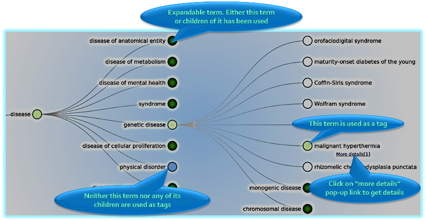
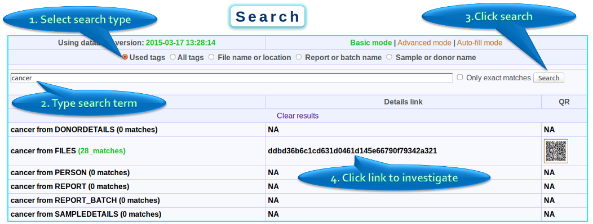
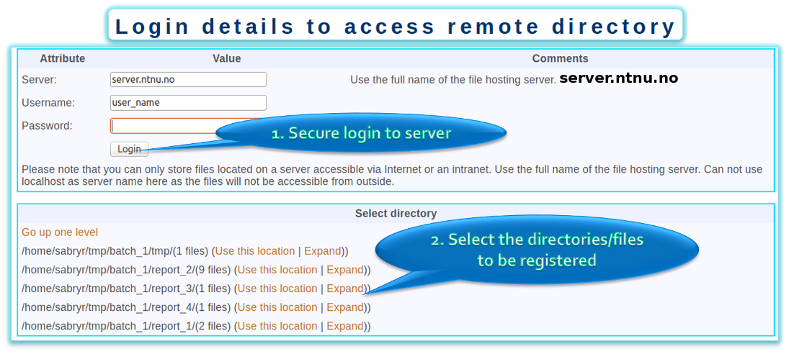
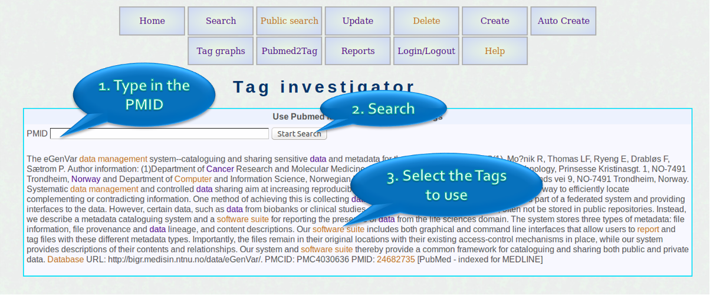
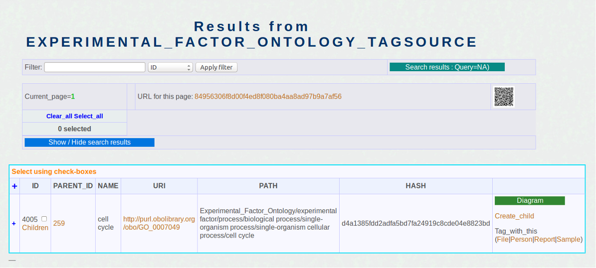

Web interface - Search
Public Search
This option allows searching through the tags used in the current server and all servers linked to it. The results containd links to get more details
Public search - graph browser
The users can load the tags as a graph and visually inspect which ones are used. Once an interesting tag is located it can be further investigated
Reporting data
Automatically extracting metadata from the web-interface is supported only for computers running Unix based OS and has SSH access via port 22
Extract tags from PUBMED
It is possible to highlight tags in an abstract and use these to tag data, people or reports.
Attache tags from a publication abstract to data used in a publication
This example shows how to create reports referring to a publication and include relevant data to the report.

Public Search
- Each eGenVar server instance can chose to be synchronized with other instances (e.g. eGenVar serverf linking servers of different universities to each other)
- The public search allows users to investigate whether a tag is used without login.
- Can search through all the tags synchronized with the server you are connected.
- Tells you whether a tag is used and where more information is available (link to login page of the original server)
This screenshot show the search options available when the user is logged in.

Public search - graph browser
- Instead of searching for a term the users can browse for available terms using this method.
- For example, the user could load the human disease ontology as a graph and expand or collapse nodes using the mouse.
- If a term (a node in the graph) or one of its children is used as a tag, it will be coloured green, otherwise blue.
- Once the user finds the term, the "more details" link in the right click menu will lead to more details and usage of that term as a tag.

In this example the user is searching for files that were generated by experiments using the ‘Infinium HD Assay’. The search term ‘Infinium HD Assay’ was used to search through the tags. The user finds reports with this tags. Subsequently the search results were expanded to get the list of files.
Private search
- Registered users can login and get access to a more detailed search page.
- Not only tells whether a tag is used, it also allows to investigate results further.
- Can restrict amount of information the user sees using controlling access levels.
- The results are synchronised across all interfaces. E.g. if you perform a search using egenv (command line tool), the results will also be available in the web interface in real time.
- If the exact term to search is not known, then the "All tags" option could be selected to browse through all tagsources.

Auto create
- If the computer containing the data can be accessed using SSH, then this feature can be used to convert existing data arrangements in to eGenVar records.
- After connecting to the server, the folder with the files can be selected with "use this location option". Then eGenVar will evaluate the content and perform checksum calculations to show files already recorded and new once.

Extract tags from PUBMED
- The screenshot on the left show the tag investigator. Users can use PUBMED identifiers to investigate possible tags in publications using this option.
- The highlighted tags can be clicked to display detials and more options available.

Attache tags from a publication abstract to data used in a publication
- First create a report_batch using "create option". Lets name it Tom.
- Second step is to create report using the "Create option". In this example lets assume that the pubmed id is used as the report name. Use Tom as the report_batch .
- Next, use the Tag analyser to load the publications (using the pubmed id).
- Click on a tag.
- Click on the Report link under "tag_with_this" as shown on the left screenshot.
- Select the Report you created, and tag it.
- Then place your data in a folder with the name as the pubmed id and parent folder as Tom. This will help eGenVar to identify the data as belonging to the report we created with the pubmed id,
- Then use the Auto create option explained above to upload file metadata.
More examples
- <TODO>